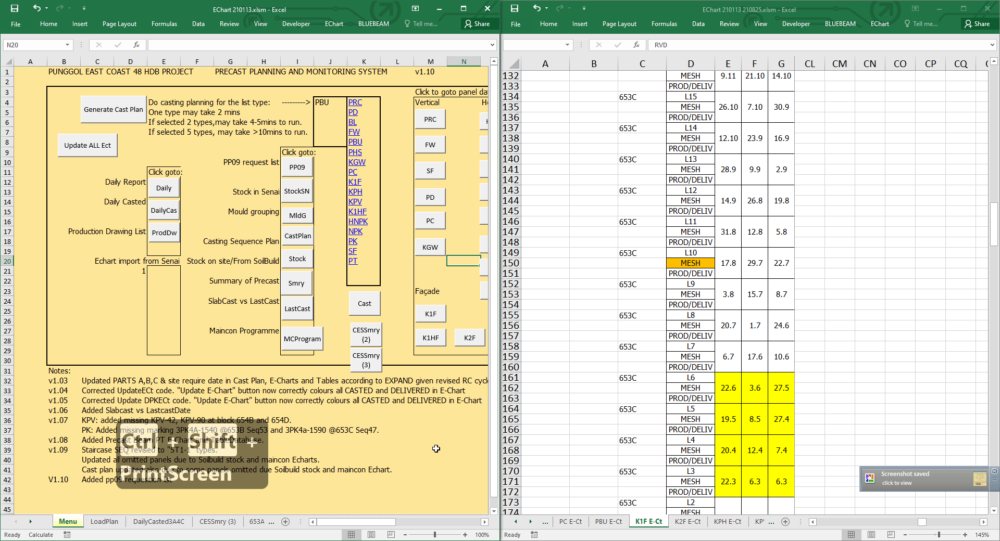

PEC48 E-Chart guide to use R1
- Senai Echart
- Configuring the settings to use “EChart 21013.xlsm” echart so it doesn’t auto calculate the whole echart. VERY IMPORTANT IF YOU DO NOT WANT TO EXCEL TO LAG.
 Import E-Chart from Senai
Import E-Chart from Senai
- Open up both “EChart 210113.xlsm” and echart received from Senai, for this example, senai echart is “EChart 210113 210825.xlsm"

- When you opened up both echart make sure to press “Don’t update” button. Updating will cause all formulas to
recalculate and eventually cause the excel to freeze.
- Press Alt + F11 to open up the Microsft Visual Basic for Applications window.

- Click the 1. Import Senai Button and the immediate window in the right window should start to show its actions of
importing.